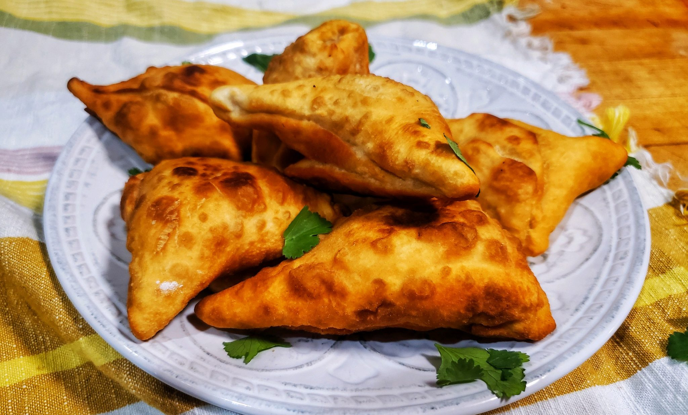
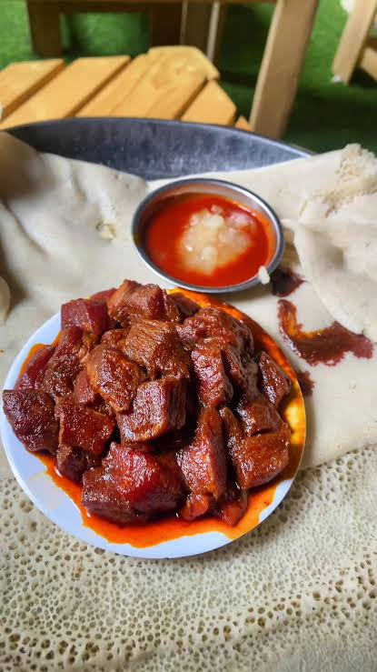

Zighinì di carne
€17Spezzatino di manzo o pollo cotto a lungo nel berberè della casa, servito sull'injera con purè di ceci, lenticchie e insalata.


Un ristorante eritreo ed etiope nel cuore di Porta Venezia. Injera fatta in casa, spezie macinate al momento, ricette tramandate da generazioni.
La nostra storia
Al Sicomoro nasce dall'incontro fra due culture e una stessa idea di ospitalità: la convivialità della tavola condivisa, il ritmo lento delle spezie, il calore dell'injera che arriva al centro come una mappa di sapori.
Ogni mattina prepariamo l'injera secondo la tradizione, lasciando fermentare la pasta di teff per giorni. Le carni vengono marinate nel berberè della casa — una miscela di oltre dodici spezie tostate e macinate da noi.
"Mangiare con le mani non è folklore. È un modo di ricordare che il cibo passa prima dal cuore." — Famiglia Al SicomoroL'esperienza al tavolo →
Spezzatino di manzo o pollo cotto a lungo nel berberè della casa, servito sull'injera con purè di ceci, lenticchie e insalata.

Manzo tritato fine con burro chiarificato e mitmita. Disponibile cotto, crudo o semicrudo secondo tradizione.

Fagottini croccanti ripieni con carne macinata di manzo o pollo, fritti al momento. Due varianti a scelta.

Lenticchie rosse e gialle, shiro (crema di ceci), hamli (coste), alicia (cavolo, fagioli e patate), rapa con carote e insalata. Servito sull'injera.

Bocconcini di manzo con burro chiarificato e spezie. Cotto, crudo o semicrudo.

Injera saltata in padella con pomodoro, cipolla e berberè, nella versione senza uova.
Tre giorni di fermentazione naturale del teff. Niente farine industriali, nessuna scorciatoia. Ogni mattina ricominciamo daccapo.
Dodici spezie tostate e macinate da noi. È la firma di ogni piatto e non si trova in nessun'altra cucina di Milano.
Un unico grande piatto al centro del tavolo, e si mangia con le mani. La cucina è gesto, racconto, ricordo. Mai solo cibo.
A fine pasto, su richiesta, la cerimonia del caffè etiope. Chicchi tostati al tavolo, incenso, tre tazze. Quaranta minuti di silenzio condiviso.
What an amazing experience. Food is delicious, the staff is lovely and a very beautiful venue as well. One of the best and most authentic African meals I've had outside of Africa.
From the very first bite, I was transported straight back home. The flavors are deeply authentic, rich, and comforting — exactly like a home cooked meal prepared with love. An absolute must.
An incredible surprise. Spicy meat stew, lentil stew, cubed beef and other vegetables perfectly spiced on a dish meant to be shared. Zaid is welcoming and Giulia an absolute delight. An absolute gem.
Excellent experience — food and service with kindness. If you're a local you'll be a regular, if you're a tourist it's a must try. Try the South African wine selection — you will not be disappointed.
Accoglienza ottima e atmosfera molto piacevole per arredi e musica. Ottima cucina etnica.
Personale infinitamente gentili e vi faranno scoppiare di cibo (soprattutto la mamma).
A due passi dalla metro, nel quartiere più cosmopolita di Milano. Prenota un tavolo per cena o passa per il pranzo — la sala è piccola, meglio avvisarci.